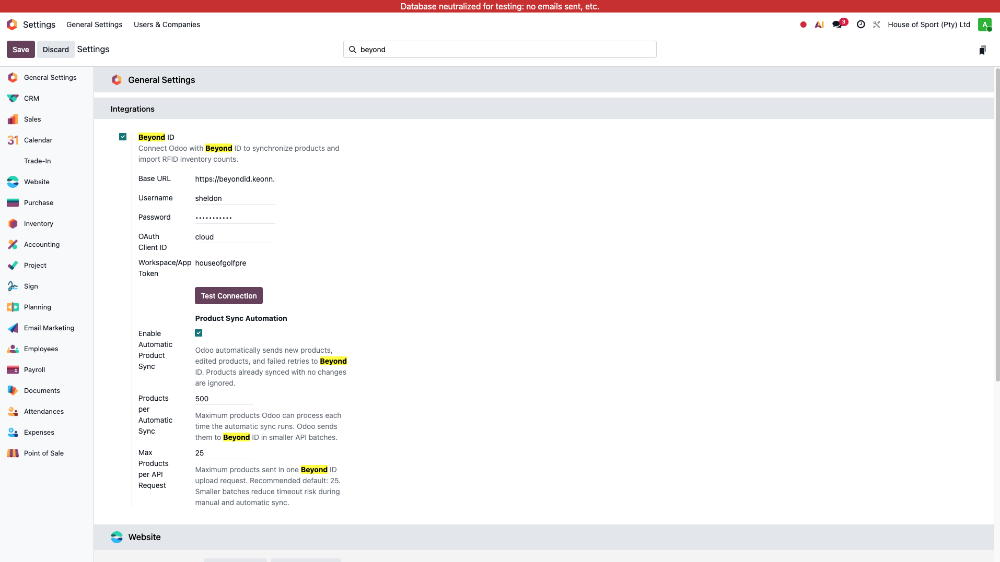
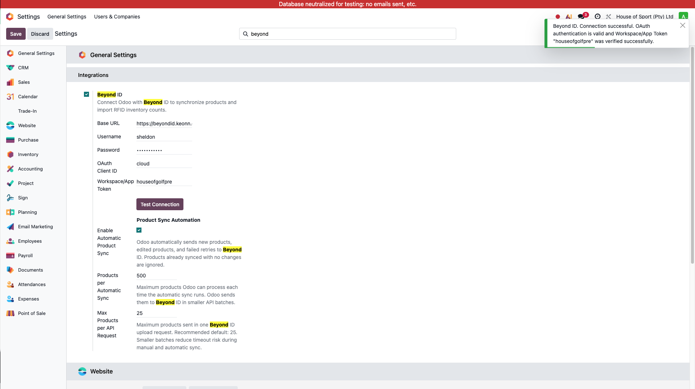

Beyond ID Manager User Manual
Beyond ID Manager connects Odoo to Beyond ID (AdvanCloud), Keonn's RFID inventory platform. It stores the connection credentials, handles OAuth authentication behind the scenes, and lets other modules pull shop lists and RFID stock counts from Beyond ID.
1. Introduction
This module does not add any new menus or screens of its own. Everything lives inside a single "Beyond ID" panel on Odoo's Settings page. Once configured, it exposes a small set of API methods that other Retail IT modules use to fetch RFID shop and inventory data from Beyond ID — this manual covers the settings panel itself and what happens behind it.
Main purpose
Store the Beyond ID connection details (base URL, credentials, OAuth client ID, workspace token) and keep a working, cached OAuth access token so other modules can call Beyond ID without re-authenticating on every request.
Operational flow
Enable the integration, fill in the connection fields, save, then use "Test Connection" to confirm Odoo can authenticate and, if a workspace token is set, that Beyond ID accepts it.
2. Configuration
Open Settings > General Settings, scroll to the Integrations
block, and toggle on the "Beyond ID" setting to reveal the connection fields.

| Field | Purpose |
|---|---|
Enable Beyond ID Integration |
Master switch. Reveals the rest of the fields and is checked before any Beyond ID call is expected to work. |
Base URL |
The Beyond ID / AdvanCloud domain, e.g.
https://beyondid.keonn.com. A trailing slash is trimmed
automatically. |
Username |
Beyond ID account username used for OAuth login. |
Password |
Beyond ID account password used for OAuth login. Masked in the UI. |
OAuth Client ID |
The AdvanCloud OAuth client ID. Defaults to cloud,
which is what Beyond ID's own API documentation uses. |
Workspace/App Token |
Technical workspace/app code required for shop and inventory
calls. Not required just to authenticate, but required for
Test Connection's workspace check and for any shop or
stock lookup. |
Example configuration
Base URL: https://beyondid.keonn.com, Username:
wilder, Password: (Beyond ID account password), OAuth Client
ID: cloud, Workspace/App Token: house_of_gol.
Save, then click Test Connection to confirm both the login and the
workspace token are accepted.
3. How It Works
Beyond ID Manager authenticates using an OAuth "password" grant, then caches the resulting access token so repeated calls don't have to log in again.
| Field / Data | Source | Rule |
|---|---|---|
access_token |
POST /advancloud/oauth/token |
Requested with the saved username, password and OAuth client ID. Reused from cache until it is close to expiring. |
access_token_expires_at |
Computed from the token's expires_in |
Stored 30 seconds earlier than the real expiry (a safety buffer) so a near-expired token is never used for a live call. |
shops |
POST /advancloud/import/stock/status |
Requires the workspace token. Used both by "Test Connection" and
by list_shops(). |
inventories |
POST /advancloud/import/stock/search |
Looked up per shop code; can be filtered by inventory type and date range. |
| Stock counts | POST /advancloud/import/stock/download or
/download/{inventory_code} |
Returns the RFID-counted stock for a shop, or for one specific inventory when a code is given. |
4. Testing the Connection
After saving the configuration, use the Test Connection button to confirm Odoo can reach Beyond ID and that the credentials are valid.

- Fill in Base URL, Username, Password and OAuth Client ID (and Workspace/App Token if you have one), then save the settings.
- Click "Test Connection". Odoo requests a fresh OAuth access token using the saved credentials.
- If a Workspace/App Token is set, Odoo also verifies it against Beyond ID's stock status endpoint and reports the token in the success message.
5. Edge Cases & Resets
Every time the settings form is saved, the cached OAuth access token is cleared automatically, so a stale token from an old username/password can never linger after a credentials change. There is no manual "reset" button needed — saving is the reset.
6. Outcomes and Errors
The Test Connection button and the underlying API calls surface a small set of distinct outcomes, so you always know which layer failed: the saved form, the OAuth login, or the workspace token.
| Reason | Meaning | Typical action |
|---|---|---|
| Missing required fields | Base URL, Username, Password or OAuth Client ID is blank (Workspace/App Token is also required for shop/stock calls). | Fill in the listed field(s) and save. |
| Authorization failed (HTTP 401/403) | Beyond ID rejected the username/password or client ID. | Double-check the credentials with the client, then re-test. |
| Temporary error (HTTP 408/429/500/502/503/504) | Beyond ID is temporarily unavailable or rate-limiting. | Wait a moment and try again; no configuration change needed. |
| Workspace/App Token rejected | OAuth login succeeded but Beyond ID does not recognize the workspace token. | Confirm the correct workspace/app code with Beyond ID/Keonn. |
| Connection failed / invalid response | Odoo could not reach the Base URL, or Beyond ID returned something that isn't valid JSON. | Verify the Base URL and that the Odoo server has network access to it. |
| No inventory found | The requested shop or inventory currently has no RFID count uploaded to Beyond ID. | Pick another inventory, or confirm the count was uploaded on the Beyond ID side. |
7. Best Practices
- Always save the settings form before testing — the test uses saved values only.
- Set the Workspace/App Token as soon as it's known; without it, Test Connection only proves the login works, not that shop/inventory data is reachable.
- If credentials are rotated on the Beyond ID side, update and save this form promptly — the old access token is discarded automatically on save, so there's no separate cache to clear.